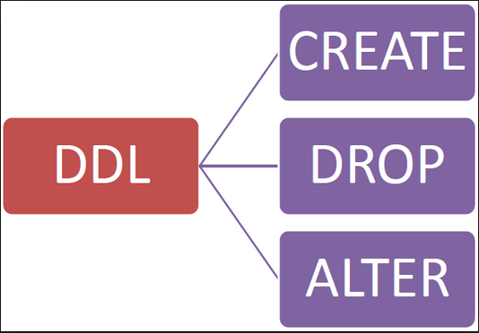

|
 |
|---|
|
Definición de LDD: El lenguaje de definición de datos (en inglés Data Definition Language, o DDL), es el que se encarga de la modificación de la estructura de los objetos de la base de datos. El SGBD posee un compilador de LDD cuya función consiste en procesar las sentencias del lenguaje para identificar las descripciones de los distintos elementos de los esquemas y almacenar la descripción del esquema en el catálogo o diccionario de datos. Existen cuatro operaciones básicas: Definición de LMD: Una vez creados los esquemas de la base de datos, los usuarios necesitan un lenguaje que les permita manipular los datos de la base de datos: realizar consultas, inserciones, eliminaciones y modificaciones. Este lenguaje es el que se denomina (LMD). LMD: Un lenguaje de manipulación de datos (Data Manipulation Language, o DML en inglés) es un lenguaje proporcionado por el sistema de gestión de base de datos que permite a los usuarios llevar a cabo las tareas de consulta o manipulación de los datos, organizados por el modelo de datos adecuado. Definición de LCD: Es un lenguaje que incluye una serie de comandos SQL. Como los anteriores, es proporcionado por los sistemas gestores de bases de datos. Sus siglas son DCL por su nombre en inglés, Data Control Language. Estos comandos permiten al Administrador del sistema gestor de base de datos, controlar el acceso a los objetos, es decir, podemos otorgar o denegar permisos a uno o más roles para realizar determinadas tareas. Los comandos para controlar los permisos son los siguientes: |